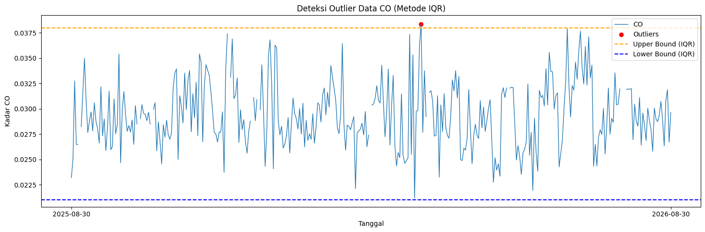
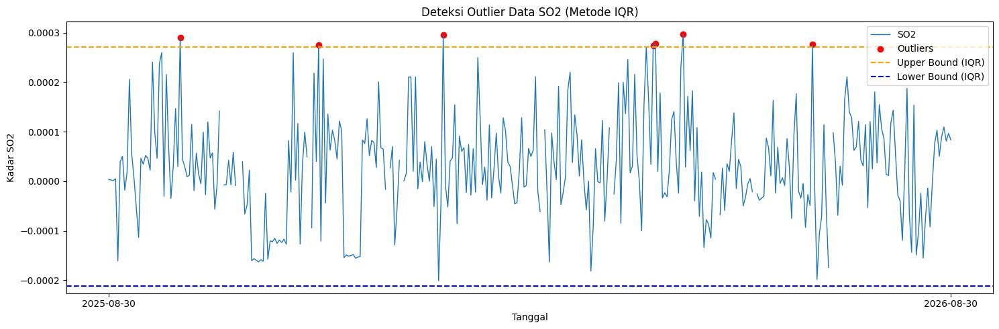
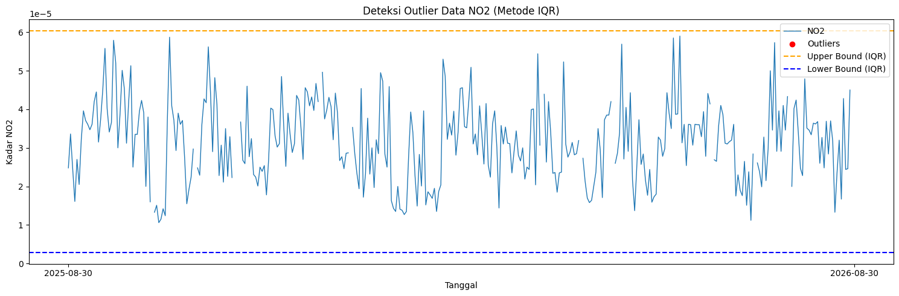
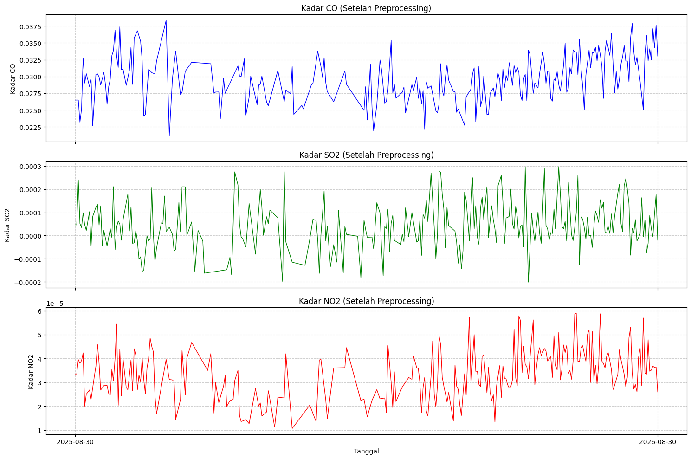
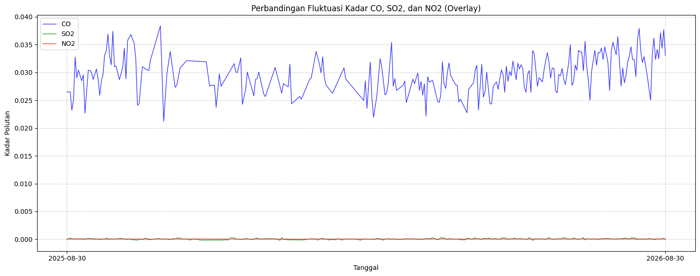

Data Preprocessing dan Ekstraksi Fitur#
Preprocessing: Penanganan Outliers dan Interpolasi#
Pada tahap Data Understanding, kita telah mengidentifikasi adanya kemungkinan nilai outliers pada deret waktu. Untuk menangani permasalahan ini dan mempersiapkan data agar bisa diekstrak fiturnya secara mulus, kita menerapkan pembersihan data menggunakan metode Rentang Interkuartil (IQR) dan mengisi (imputasi) kekosongan data menggunakan interpolasi linier.
Di akhir proses imputasi, teknik backward fill (bfill) serta forward fill (ffill) dimanfaatkan guna mengatasi nilai kosong pada bagian pinggir atau awalan dan akhiran rangkaian data yang tidak bisa diinterpolasi secara linier.
Berikut adalah tahapan deteksi outlier, imputasi, dan penyimpanan dataset untuk masing-masing polutan udara:
1. Karbon Monoksida (CO)#
import pandas as pd
import numpy as np
import matplotlib.pyplot as plt
# Baca data CO
df = pd.read_csv("../../data/polutan/CO_Outlier.csv")
df['date'] = pd.to_datetime(df['date'])
df = df.sort_values('date').reset_index(drop=True)
df['CO'] = pd.to_numeric(df['CO'], errors='coerce')
# Hitung IQR
Q1 = df['CO'].quantile(0.25)
Q3 = df['CO'].quantile(0.75)
IQR = Q3 - Q1
lower_bound = Q1 - 1.5 * IQR
upper_bound = Q3 + 1.5 * IQR
# Filter outlier
outliers_iqr = df[(df['CO'] < lower_bound) | (df['CO'] > upper_bound)]
print("Jumlah Outlier CO (IQR):", len(outliers_iqr))
Jumlah Outlier CO (IQR): 1
Visualisasi batas ambang IQR terhadap distribusi data CO:
plt.figure(figsize=(15,5))
plt.plot(df['date'], df['CO'], label="CO", linewidth=1)
plt.scatter(outliers_iqr['date'], outliers_iqr['CO'],
color='red', marker='o', label="Outliers")
plt.axhline(upper_bound, color='orange', linestyle='dashed', label="Upper Bound (IQR)")
plt.axhline(lower_bound, color='blue', linestyle='dashed', label="Lower Bound (IQR)")
plt.title("Deteksi Outlier Data CO (Metode IQR)")
plt.xlabel("Tanggal")
plt.ylabel("Kadar CO")
plt.legend()
plt.tight_layout()
plt.xticks(
ticks=[df['date'].iloc[0], df['date'].iloc[-1]],
labels=[df['date'].iloc[0].strftime('%Y-%m-%d'),
df['date'].iloc[-1].strftime('%Y-%m-%d')]
)
plt.show()

Penanganan outlier dan pengisian nilai yang hilang untuk CO:
# Tandai outlier menjadi NaN
df['CO_cleaned'] = df['CO'].mask((df['CO'] < lower_bound) | (df['CO'] > upper_bound))
# Lakukan interpolasi linier pada NaN yang sudah dibuat
df['CO_filled'] = df['CO_cleaned'].interpolate(method='linear').bfill().ffill()
# Simpan data yang telah dibersihkan dan diinterpolasi ke file CSV baru
df_co = pd.DataFrame({"date": df['date'], "CO": df['CO_filled']})
df_co.to_csv("../../data/polutan/CO_after.csv", index=False)
print("Data CO berhasil diproses dan disimpan ke CO_after.csv")
2. Sulfur Dioksida (SO2)#
import pandas as pd
import numpy as np
import matplotlib.pyplot as plt
df = pd.read_csv("../../data/polutan/SO2_Outlier.csv")
df['date'] = pd.to_datetime(df['date'])
df = df.sort_values('date').reset_index(drop=True)
df['SO2'] = pd.to_numeric(df['SO2'], errors='coerce')
# Hitung IQR
Q1 = df['SO2'].quantile(0.25)
Q3 = df['SO2'].quantile(0.75)
IQR = Q3 - Q1
lower_bound = Q1 - 1.5 * IQR
upper_bound = Q3 + 1.5 * IQR
# Filter outlier
outliers_iqr = df[(df['SO2'] < lower_bound) | (df['SO2'] > upper_bound)]
print("Jumlah Outlier SO2 (IQR):", len(outliers_iqr))
Jumlah Outlier SO2 (IQR): 7
Visualisasi batas ambang IQR terhadap distribusi data SO2:
plt.figure(figsize=(15,5))
plt.plot(df['date'], df['SO2'], label="SO2", linewidth=1)
plt.scatter(outliers_iqr['date'], outliers_iqr['SO2'],
color='red', marker='o', label="Outliers")
plt.axhline(upper_bound, color='orange', linestyle='dashed', label="Upper Bound (IQR)")
plt.axhline(lower_bound, color='blue', linestyle='dashed', label="Lower Bound (IQR)")
plt.title("Deteksi Outlier Data SO2 (Metode IQR)")
plt.xlabel("Tanggal")
plt.ylabel("Kadar SO2")
plt.legend()
plt.tight_layout()
plt.xticks(
ticks=[df['date'].iloc[0], df['date'].iloc[-1]],
labels=[df['date'].iloc[0].strftime('%Y-%m-%d'),
df['date'].iloc[-1].strftime('%Y-%m-%d')]
)
plt.show()

Penanganan outlier dan pengisian nilai yang hilang untuk SO2:
# Tandai outlier menjadi NaN
df['SO2_cleaned'] = df['SO2'].mask((df['SO2'] < lower_bound) | (df['SO2'] > upper_bound))
# Lakukan interpolasi linier pada NaN yang sudah dibuat
df['SO2_filled'] = df['SO2_cleaned'].interpolate(method='linear').bfill().ffill()
# Simpan data yang telah dibersihkan dan diinterpolasi ke file CSV baru
df_so2 = pd.DataFrame({"date": df['date'], "SO2": df['SO2_filled']})
df_so2.to_csv("../../data/polutan/SO2_after.csv", index=False)
print("Data SO2 berhasil diproses dan disimpan ke SO2_after.csv")
3. Nitrogen Dioksida (NO2)#
import pandas as pd
import numpy as np
import matplotlib.pyplot as plt
df = pd.read_csv("../../data/polutan/NO2_Outlier.csv")
df['date'] = pd.to_datetime(df['date'])
df = df.sort_values('date').reset_index(drop=True)
df['NO2'] = pd.to_numeric(df['NO2'], errors='coerce')
# Hitung IQR
Q1 = df['NO2'].quantile(0.25)
Q3 = df['NO2'].quantile(0.75)
IQR = Q3 - Q1
lower_bound = Q1 - 1.5 * IQR
upper_bound = Q3 + 1.5 * IQR
# Filter outlier
outliers_iqr = df[(df['NO2'] < lower_bound) | (df['NO2'] > upper_bound)]
print("Jumlah Outlier NO2 (IQR):", len(outliers_iqr))
Jumlah Outlier NO2 (IQR): 0
Visualisasi batas ambang IQR terhadap distribusi data NO2:
plt.figure(figsize=(15,5))
plt.plot(df['date'], df['NO2'], label="NO2", linewidth=1)
plt.scatter(outliers_iqr['date'], outliers_iqr['NO2'],
color='red', marker='o', label="Outliers")
plt.axhline(upper_bound, color='orange', linestyle='dashed', label="Upper Bound (IQR)")
plt.axhline(lower_bound, color='blue', linestyle='dashed', label="Lower Bound (IQR)")
plt.title("Deteksi Outlier Data NO2 (Metode IQR)")
plt.xlabel("Tanggal")
plt.ylabel("Kadar NO2")
plt.legend()
plt.tight_layout()
plt.xticks(
ticks=[df['date'].iloc[0], df['date'].iloc[-1]],
labels=[df['date'].iloc[0].strftime('%Y-%m-%d'),
df['date'].iloc[-1].strftime('%Y-%m-%d')]
)
plt.show()

Penanganan outlier dan pengisian nilai yang hilang untuk NO2:
# Tandai outlier menjadi NaN
df['NO2_cleaned'] = df['NO2'].mask((df['NO2'] < lower_bound) | (df['NO2'] > upper_bound))
# Lakukan interpolasi linier pada NaN yang sudah dibuat
df['NO2_filled'] = df['NO2_cleaned'].interpolate(method='linear').bfill().ffill()
# Simpan data yang telah dibersihkan dan diinterpolasi ke file CSV baru
df_no2 = pd.DataFrame({"date": df['date'], "NO2": df['NO2_filled']})
df_no2.to_csv("../../data/polutan/NO2_after.csv", index=False)
print("Data NO2 berhasil diproses dan disimpan ke NO2_after.csv")
4. Visualisasi Gabungan Setelah Preprocessing#
Setelah proses penanganan outlier dan interpolasi selesai untuk ketiga polutan, kita dapat melihat visualisasi gabungan dari kadar CO, SO2, dan NO2 yang telah bersih dan utuh. Deret waktu ini telah siap untuk dilanjutkan ke tahap ekstraksi fitur.
import pandas as pd
import matplotlib.pyplot as plt
# Memuat data yang telah diproses
df_co = pd.read_csv("../../data/polutan/CO_after.csv")
df_so2 = pd.read_csv("../../data/polutan/SO2_after.csv")
df_no2 = pd.read_csv("../../data/polutan/NO2_after.csv")
df_co['date'] = pd.to_datetime(df_co['date'])
df_so2['date'] = pd.to_datetime(df_so2['date'])
df_no2['date'] = pd.to_datetime(df_no2['date'])
# Membuat subplot untuk ketiga polutan
fig, axes = plt.subplots(3, 1, figsize=(15, 10), sharex=True)
# Plot CO
axes[0].plot(df_co['date'], df_co['CO'], color='blue', linewidth=1)
axes[0].set_title('Kadar CO (Setelah Preprocessing)')
axes[0].set_ylabel('Kadar CO')
axes[0].grid(True, linestyle='--', alpha=0.6)
# Plot SO2
axes[1].plot(df_so2['date'], df_so2['SO2'], color='green', linewidth=1)
axes[1].set_title('Kadar SO2 (Setelah Preprocessing)')
axes[1].set_ylabel('Kadar SO2')
axes[1].grid(True, linestyle='--', alpha=0.6)
# Plot NO2
axes[2].plot(df_no2['date'], df_no2['NO2'], color='red', linewidth=1)
axes[2].set_title('Kadar NO2 (Setelah Preprocessing)')
axes[2].set_xlabel('Tanggal')
axes[2].set_ylabel('Kadar NO2')
axes[2].grid(True, linestyle='--', alpha=0.6)
# Menyesuaikan tampilan sumbu X
plt.xticks(
ticks=[df_co['date'].iloc[0], df_co['date'].iloc[-1]],
labels=[df_co['date'].iloc[0].strftime('%Y-%m-%d'),
df_co['date'].iloc[-1].strftime('%Y-%m-%d')]
)
plt.tight_layout()
plt.show()

Selain divisualisasikan dalam subplot terpisah, kita juga dapat menumpuk (overlay) ketiga polutan dalam satu grafik untuk membandingkan fluktuasinya secara langsung. Karena skala kadar polutan mungkin berbeda, perbandingan ini difokuskan pada pengamatan pola tren perubahannya.
plt.figure(figsize=(15, 6))
# Plot ketiga polutan dalam satu axis
plt.plot(df_co['date'], df_co['CO'], color='blue', label='CO', linewidth=1, alpha=0.8)
plt.plot(df_so2['date'], df_so2['SO2'], color='green', label='SO2', linewidth=1, alpha=0.8)
plt.plot(df_no2['date'], df_no2['NO2'], color='red', label='NO2', linewidth=1, alpha=0.8)
plt.title('Perbandingan Fluktuasi Kadar CO, SO2, dan NO2 (Overlay)')
plt.xlabel('Tanggal')
plt.ylabel('Kadar Polutan')
plt.grid(True, linestyle='--', alpha=0.6)
plt.legend()
# Menyesuaikan tampilan sumbu X
plt.xticks(
ticks=[df_co['date'].iloc[0], df_co['date'].iloc[-1]],
labels=[df_co['date'].iloc[0].strftime('%Y-%m-%d'),
df_co['date'].iloc[-1].strftime('%Y-%m-%d')]
)
plt.tight_layout()
plt.show()

Ekstraksi Fitur Deret Waktu (Time Series)#
Dengan data deret waktu polutan udara yang konsisten (tanpa tanggal hilang dan tanpa outlier), kita dapat melangkah ke ekstraksi berbagai fitur statistik, temporal, maupun spektral. Fitur-fitur ini sangat berguna sebagai parameter input yang merepresentasikan karakteristik trend harian polutan ke dalam model machine learning maupun deep learning.
Kita akan memanfaatkan modul pustaka Python bernama tsfel (Time Series Feature Extraction Library) guna mempermudah proses komputasi serta standarisasi ragam tipe fitur. Untuk memastikan hasil ekstraksi mudah dibaca, format akhir data CSV akan di-transpose sehingga struktur tabel menjadi format dua kolom, yakni Feature dan Value.
1. Karbon Monoksida (CO)#
import pandas as pd
import numpy as np
import inspect
import tsfel.feature_extraction.features as tsfel_features
# ---------- 1. Muat data yang sudah dibersihkan ----------
df = pd.read_csv('../../data/polutan/CO_after.csv')
df['date'] = pd.to_datetime(df['date'])
df = df.sort_values('date').reset_index(drop=True)
target_pollutant = 'CO'
fs = 1
signal_1d = df[target_pollutant].astype(float).values
# ---------- 2. Inisiasi Daftar Fitur TSFEL ----------
FEATURE_LIST = """abs_energy auc autocorr average_power calc_centroid calc_max calc_mean
calc_median calc_min calc_std calc_var dfa distance ecdf ecdf_percentile ecdf_percentile_count
ecdf_slope entropy fundamental_frequency higuchi_fractal_dimension hist_mode human_range_energy
hurst_exponent interq_range kurtosis lempel_ziv lpcc max_frequency max_power_spectrum
maximum_fractal_length mean_abs_deviation mean_abs_diff mean_diff median_abs_deviation
median_abs_diff median_diff median_frequency mfcc mse negative_turning neighbourhood_peaks
petrosian_fractal_dimension pk_pk_distance positive_turning power_bandwidth rms skewness slope
spectral_centroid spectral_decrease spectral_distance spectral_entropy spectral_kurtosis
spectral_positive_turning spectral_roll_off spectral_roll_on spectral_skewness spectral_slope
spectral_spread spectral_variation spectrogram_mean_coeff sum_abs_diff wavelet_abs_mean
wavelet_energy wavelet_entropy wavelet_std wavelet_var zero_cross""".split()
# ---------- 3. Fungsi ekstraksi dan penyeragaman output ----------
def to_scalar(result):
if isinstance(result, dict) and "values" in result:
result = result["values"]
if isinstance(result, (list, tuple, np.ndarray)):
arr = np.asarray(result, dtype=float)
return float(np.nanmean(arr))
return float(result)
def extract_one(fn_name, signal, fs):
fn = getattr(tsfel_features, fn_name)
params = inspect.signature(fn).parameters
if "fs" in params:
result = fn(signal, fs)
else:
result = fn(signal)
return to_scalar(result)
# Lakukan ekstraksi iteratif pada fitur
row = {}
for fn_name in FEATURE_LIST:
row[fn_name] = extract_one(fn_name, signal_1d, fs)
extracted_features_final = pd.DataFrame([row])
# Export hasil ke file CSV
extracted_features_final.to_csv(f'../../data/polutan/{target_pollutant}_widang_TSFEL.csv', index=False)
print(f"Berhasil mengekstrak {len(FEATURE_LIST)} fitur untuk {target_pollutant}.")
Contoh cuplikan hasil ekstraksi fitur CO:
| abs_energy | auc | autocorr | average_power | calc_centroid | calc_max | calc_mean | calc_median | calc_min | calc_std | ... | spectral_spread | spectral_variation | spectrogram_mean_coeff | sum_abs_diff | wavelet_abs_mean | wavelet_energy | wavelet_entropy | wavelet_std | wavelet_var | zero_cross | |
|---|---|---|---|---|---|---|---|---|---|---|---|---|---|---|---|---|---|---|---|---|---|
| 0 | 0.320845 | 10.74496 | 3.0 | 0.000879 | 184.819043 | 0.037897 | 0.029439 | 0.029169 | 0.02119 | 0.003156 | ... | 0.129537 | 0.47419 | 0.000013 | 0.698436 | 0.001767 | 0.007519 | 2.147071 | 0.00728 | 0.00006 | 0.0 |
1 rows × 68 columns
2. Sulfur Dioksida (SO2)#
import pandas as pd
import numpy as np
import inspect
import tsfel.feature_extraction.features as tsfel_features
df = pd.read_csv('../../data/polutan/SO2_after.csv')
df['date'] = pd.to_datetime(df['date'])
df = df.sort_values('date').reset_index(drop=True)
target_pollutant = 'SO2'
fs = 1
signal_1d = df[target_pollutant].astype(float).values
FEATURE_LIST = """abs_energy auc autocorr average_power calc_centroid calc_max calc_mean
calc_median calc_min calc_std calc_var dfa distance ecdf ecdf_percentile ecdf_percentile_count
ecdf_slope entropy fundamental_frequency higuchi_fractal_dimension hist_mode human_range_energy
hurst_exponent interq_range kurtosis lempel_ziv lpcc max_frequency max_power_spectrum
maximum_fractal_length mean_abs_deviation mean_abs_diff mean_diff median_abs_deviation
median_abs_diff median_diff median_frequency mfcc mse negative_turning neighbourhood_peaks
petrosian_fractal_dimension pk_pk_distance positive_turning power_bandwidth rms skewness slope
spectral_centroid spectral_decrease spectral_distance spectral_entropy spectral_kurtosis
spectral_positive_turning spectral_roll_off spectral_roll_on spectral_skewness spectral_slope
spectral_spread spectral_variation spectrogram_mean_coeff sum_abs_diff wavelet_abs_mean
wavelet_energy wavelet_entropy wavelet_std wavelet_var zero_cross""".split()
# Fungsi bantu untuk merapikan output TSFEL
def to_scalar(result):
if isinstance(result, dict) and "values" in result:
result = result["values"]
if isinstance(result, (list, tuple, np.ndarray)):
arr = np.asarray(result, dtype=float)
return float(np.nanmean(arr))
return float(result)
def extract_one(fn_name, signal, fs):
fn = getattr(tsfel_features, fn_name)
params = inspect.signature(fn).parameters
if "fs" in params:
result = fn(signal, fs)
else:
result = fn(signal)
return to_scalar(result)
row = {}
for fn_name in FEATURE_LIST:
row[fn_name] = extract_one(fn_name, signal_1d, fs)
extracted_features_final = pd.DataFrame([row])
extracted_features_final.to_csv(f'../../data/polutan/{target_pollutant}_widang_TSFEL.csv', index=False)
print(f"Berhasil mengekstrak fitur untuk {target_pollutant}.")
Contoh cuplikan hasil ekstraksi fitur SO2:
| abs_energy | auc | autocorr | average_power | calc_centroid | calc_max | calc_mean | calc_median | calc_min | calc_std | ... | spectral_spread | spectral_variation | spectrogram_mean_coeff | sum_abs_diff | wavelet_abs_mean | wavelet_energy | wavelet_entropy | wavelet_std | wavelet_var | zero_cross | |
|---|---|---|---|---|---|---|---|---|---|---|---|---|---|---|---|---|---|---|---|---|---|
| 0 | 0.000004 | 0.026307 | 2.0 | 1.053692e-08 | 186.794715 | 0.000274 | 0.000026 | 0.000025 | -0.000201 | 0.000099 | ... | 0.147246 | 0.172626 | 1.702950e-08 | 0.025822 | 0.000003 | 0.000142 | 2.153694 | 0.000142 | 2.183313e-08 | 107.0 |
1 rows × 68 columns
3. Nitrogen Dioksida (NO2)#
import pandas as pd
import numpy as np
import inspect
import tsfel.feature_extraction.features as tsfel_features
df = pd.read_csv('../../data/polutan/NO2_after.csv')
df['date'] = pd.to_datetime(df['date'])
df = df.sort_values('date').reset_index(drop=True)
target_pollutant = 'NO2'
fs = 1
signal_1d = df[target_pollutant].astype(float).values
FEATURE_LIST = """abs_energy auc autocorr average_power calc_centroid calc_max calc_mean
calc_median calc_min calc_std calc_var dfa distance ecdf ecdf_percentile ecdf_percentile_count
ecdf_slope entropy fundamental_frequency higuchi_fractal_dimension hist_mode human_range_energy
hurst_exponent interq_range kurtosis lempel_ziv lpcc max_frequency max_power_spectrum
maximum_fractal_length mean_abs_deviation mean_abs_diff mean_diff median_abs_deviation
median_abs_diff median_diff median_frequency mfcc mse negative_turning neighbourhood_peaks
petrosian_fractal_dimension pk_pk_distance positive_turning power_bandwidth rms skewness slope
spectral_centroid spectral_decrease spectral_distance spectral_entropy spectral_kurtosis
spectral_positive_turning spectral_roll_off spectral_roll_on spectral_skewness spectral_slope
spectral_spread spectral_variation spectrogram_mean_coeff sum_abs_diff wavelet_abs_mean
wavelet_energy wavelet_entropy wavelet_std wavelet_var zero_cross""".split()
# Fungsi bantu untuk merapikan output TSFEL
def to_scalar(result):
if isinstance(result, dict) and "values" in result:
result = result["values"]
if isinstance(result, (list, tuple, np.ndarray)):
arr = np.asarray(result, dtype=float)
return float(np.nanmean(arr))
return float(result)
def extract_one(fn_name, signal, fs):
fn = getattr(tsfel_features, fn_name)
params = inspect.signature(fn).parameters
if "fs" in params:
result = fn(signal, fs)
else:
result = fn(signal)
return to_scalar(result)
row = {}
for fn_name in FEATURE_LIST:
row[fn_name] = extract_one(fn_name, signal_1d, fs)
extracted_features_final = pd.DataFrame([row])
extracted_features_final.to_csv(f'../../data/polutan/{target_pollutant}_widang_TSFEL.csv', index=False)
print(f"Berhasil mengekstrak fitur untuk {target_pollutant}.")
Contoh cuplikan hasil ekstraksi fitur NO2:
| abs_energy | auc | autocorr | average_power | calc_centroid | calc_max | calc_mean | calc_median | calc_min | calc_std | ... | spectral_spread | spectral_variation | spectrogram_mean_coeff | sum_abs_diff | wavelet_abs_mean | wavelet_energy | wavelet_entropy | wavelet_std | wavelet_var | zero_cross | |
|---|---|---|---|---|---|---|---|---|---|---|---|---|---|---|---|---|---|---|---|---|---|
| 0 | 3.989307e-07 | 0.011463 | 4.0 | 1.092961e-09 | 200.948783 | 0.000059 | 0.000031 | 0.000031 | 0.000011 | 0.00001 | ... | 0.151381 | 0.372225 | 1.464627e-10 | 0.002252 | 0.000002 | 0.000015 | 2.152183 | 0.000015 | 2.282557e-10 | 0.0 |
1 rows × 68 columns
Penjelasan Domain TSFEL#
Pustaka TSFEL membagi 68 fitur deret waktu menjadi tiga domain utama: Statistik (Statistical), Waktu (Temporal), dan Frekuensi (Spectral). Berikut adalah penjabaran lengkap untuk masing-masing fitur beserta rumusnya, serta hasil perhitungannya yang diterapkan pada polutan NO2 (dari NO2_after.csv) yang disajikan pada hasil akhir (NO2_widang_TSFEL.csv).
1. Domain Statistical#
Domain statistik mengekstrak metrik kuantitatif dan karakteristik sebaran serta bentuk distribusi dari sinyal deret waktu. Domain ini terdiri dari 17 fitur utama yang fokus pada distribusi.
calc_maxPenjelasan: Nilai maksimum dari deret waktu.
Rumus: \(\max(x)\)
Hasil (NO2):
5.51000e-05
calc_minPenjelasan: Nilai minimum dari deret waktu.
Rumus: \(\min(x)\)
Hasil (NO2):
5.12000e-06
calc_meanPenjelasan: Rata-rata (mean) dari deret waktu.
Rumus: \(\mu = \frac{1}{N} \sum_{i=1}^N x_i\)
Hasil (NO2):
2.84004e-05
calc_medianPenjelasan: Nilai tengah (median) dari deret waktu.
Rumus: \(\text{median}(x)\)
Hasil (NO2):
2.81250e-05
calc_stdPenjelasan: Standar deviasi, mengukur tingkat penyebaran data.
Rumus: \(\sigma = \sqrt{\frac{1}{N} \sum_{i=1}^N (x_i - \mu)^2}\)
Hasil (NO2):
1.01280e-05
calc_varPenjelasan: Varians, kuadrat dari standar deviasi.
Rumus: \(\sigma^2 = \frac{1}{N} \sum_{i=1}^N (x_i - \mu)^2\)
Hasil (NO2):
1.02577e-10
ecdfPenjelasan: Fungsi distribusi kumulatif empiris.
Rumus: \(\hat{F}(t) = \frac{1}{N} \sum_{i=1}^N \mathbf{1}_{x_i \le t}\)
Hasil (NO2):
1.50273e-02
ecdf_percentilePenjelasan: Nilai ECDF pada persentil tertentu.
Rumus: \(P_{perc}(\hat{F})\)
Hasil (NO2):
2.84000e-05
ecdf_percentile_countPenjelasan: Jumlah data yang berada di bawah persentil ECDF.
Rumus: \(\sum \mathbf{1}_{x_i \le P_{perc}}\)
Hasil (NO2):
1.82500e+02
ecdf_slope
Penjelasan: Kemiringan dari kurva ECDF.
Rumus: \(\frac{\Delta y}{\Delta x} \text{ pada } \hat{F}(t)\)
Hasil (NO2):
3.47222e+04
hist_mode
Penjelasan: Modus (nilai paling sering muncul) berdasarkan histogram.
Rumus: \(\arg\max_j (\text{count}(bin_j))\)
Hasil (NO2):
2.76110e-05
interq_range
Penjelasan: Jangkauan interkuartil (IQR), selisih Q3 dan Q1.
Rumus: \(IQR = Q_3 - Q_1\)
Hasil (NO2):
1.45000e-05
kurtosis
Penjelasan: Keruncingan (peakedness) dari distribusi data.
Rumus: \(K = \frac{\frac{1}{N} \sum_{i=1}^N (x_i - \mu)^4}{\sigma^4} - 3\)
Hasil (NO2):
-4.15397e-01
skewness
Penjelasan: Kemiringan (asimetri) dari distribusi data.
Rumus: \(S = \frac{\frac{1}{N} \sum_{i=1}^N (x_i - \mu)^3}{\sigma^3}\)
Hasil (NO2):
1.02776e-01
mean_abs_deviation
Penjelasan: Rata-rata simpangan absolut dari mean.
Rumus: \(MAD = \frac{1}{N} \sum_{i=1}^N |x_i - \mu|\)
Hasil (NO2):
8.22498e-06
median_abs_deviation
Penjelasan: Median dari simpangan absolut dari median.
Rumus: \(\text{Median}(|x_i - \text{median}(x)|)\)
Hasil (NO2):
7.10833e-06
rms
Penjelasan: Root Mean Square (energi kuadrat rata-rata).
Rumus: \(RMS = \sqrt{\frac{1}{N} \sum_{i=1}^N x_i^2}\)
Hasil (NO2):
3.01523e-05
2. Domain Temporal#
Domain temporal mengevaluasi sinyal dari segi urutan waktunya. Terdiri dari 25 fitur yang mengukur dependensi, jarak, autokorelasi, dan kompleksitas waktu.
abs_energyPenjelasan: Total energi absolut dari deret waktu.
Rumus: \(E = \sum_{i=1}^N x_i^2\)
Hasil (NO2):
3.32752e-07
aucPenjelasan: Area di bawah kurva sinyal (Area Under Curve).
Rumus: \(AUC = \sum_{i=1}^{N-1} \frac{x_i + x_{i+1}}{2}\)
Hasil (NO2):
1.03695e-02
autocorrPenjelasan: Autokorelasi sinyal, kesamaan sinyal dengan versi tertundanya.
Rumus: \(R(\tau) = \sum_{i=1}^{N-\tau} x_i x_{i+\tau}\)
Hasil (NO2):
1.70000e+01
average_powerPenjelasan: Daya rata-rata dari sinyal waktu.
Rumus: \(P = \frac{1}{N} \sum_{i=1}^N x_i^2\)
Hasil (NO2):
9.11650e-10
calc_centroidPenjelasan: Titik pusat dari urutan waktu (Time Centroid).
Rumus: \(C_t = \frac{\sum t_i \cdot x_i}{\sum x_i}\)
Hasil (NO2):
2.03671e+02
dfaPenjelasan: Detrended Fluctuation Analysis, untuk mengukur dependensi fraktal.
Rumus: \(F(n) \propto n^\alpha\)
Hasil (NO2):
1.01119e+00
distancePenjelasan: Total jarak (panjang lintasan) antar titik-titik berturutan.
Rumus: \(D = \sum_{i=1}^{N-1} \sqrt{1 + (x_{i+1} - x_i)^2}\)
Hasil (NO2):
3.65000e+02
entropyPenjelasan: Shannon Entropy, mengukur ketidakpastian sinyal.
Rumus: \(H = -\sum p(x) \log p(x)\)
Hasil (NO2):
9.27850e-01
higuchi_fractal_dimensionPenjelasan: Dimensi Fraktal Higuchi, mengukur kompleksitas bentuk.
Rumus: \(L(k) \propto k^{-D}\)
Hasil (NO2):
1.84022e+00
hurst_exponent
Penjelasan: Eksponen Hurst, indikasi memori jangka panjang waktu.
Rumus: \(E[\frac{R(n)}{S(n)}] = C n^H\)
Hasil (NO2):
8.03093e-01
lempel_ziv
Penjelasan: Kompleksitas Lempel-Ziv, mengukur tingkat kompresibilitas sinyal.
Rumus: \(LZ = \frac{c(N)}{\frac{N}{\log N}}\)
Hasil (NO2):
1.72131e-01
maximum_fractal_length
Penjelasan: Panjang maksimal fraktal di berbagai skala pengukuran.
Rumus: \(L_{max} = \max_k (L(k))\)
Hasil (NO2):
-2.69521e+00
mean_abs_diff
Penjelasan: Rata-rata dari perbedaan absolut titik berurutan.
Rumus: \(\mu_{\Delta} = \frac{1}{N-1} \sum_{i=1}^{N-1} |x_{i+1} - x_i|\)
Hasil (NO2):
4.56367e-06
mean_diff
Penjelasan: Rata-rata perbedaan antara titik berurutan.
Rumus: \(\mu_{d} = \frac{1}{N-1} \sum_{i=1}^{N-1} (x_{i+1} - x_i)\)
Hasil (NO2):
1.20548e-08
median_abs_diff
Penjelasan: Median perbedaan absolut berurutan.
Rumus: \(\text{Median}(|x_{i+1} - x_i|)\)
Hasil (NO2):
2.50000e-06
median_diff
Penjelasan: Median dari selisih titik berurutan.
Rumus: \(\text{Median}(x_{i+1} - x_i)\)
Hasil (NO2):
4.00000e-07
mse
Penjelasan: Mean Squared Error dari sinyal terhadap rata-ratanya.
Rumus: \(MSE = \frac{1}{N} \sum_{i=1}^N (x_i - \mu)^2\)
Hasil (NO2):
1.28358e+00
negative_turning
Penjelasan: Jumlah titik belok bergradien negatif (puncak yang turun).
Rumus: \(\sum \mathbf{1}_{x_{i-1} < x_i > x_{i+1}}\)
Hasil (NO2):
6.70000e+01
neighbourhood_peaks
Penjelasan: Jumlah puncak pada area bertetangga yang ditentukan.
Rumus: \(\sum \text{Peaks}(x, \text{window})\)
Hasil (NO2):
1.60000e+01
petrosian_fractal_dimension
Penjelasan: Dimensi Fraktal Petrosian.
Rumus: \(D = \frac{\log_{10}(N)}{\log_{10}(N) + \log_{10}(\frac{N}{N + 0.4 N_{\Delta}})}\)
Hasil (NO2):
1.02404e+00
pk_pk_distance
Penjelasan: Jarak dari puncak tertinggi ke lembah terendah (Peak-to-Peak).
Rumus: \(P2P = \max(x) - \min(x)\)
Hasil (NO2):
4.99800e-05
positive_turning
Penjelasan: Jumlah titik belok bergradien positif (lembah yang naik).
Rumus: \(\sum \mathbf{1}_{x_{i-1} > x_i < x_{i+1}}\)
Hasil (NO2):
6.80000e+01
slope
Penjelasan: Kemiringan tren regresi linier secara keseluruhan.
Rumus: \(m = \frac{\sum (t_i - \bar{t})(x_i - \mu)}{\sum (t_i - \bar{t})^2}\)
Hasil (NO2):
2.85331e-08
sum_abs_diff
Penjelasan: Total akumulasi perbedaan absolut titik berurutan.
Rumus: \(SAD = \sum_{i=1}^{N-1} |x_{i+1} - x_i|\)
Hasil (NO2):
1.66574e-03
zero_cross
Penjelasan: Jumlah titik perpotongan nol (zero-crossing).
Rumus: \(\sum \mathbf{1}_{x_i \cdot x_{i+1} < 0}\)
Hasil (NO2):
0.00000e+00
3. Domain Spectral#
Domain spektral mentransformasi data ke domain frekuensi (melalui Fourier/Wavelet). Terdiri dari 26 fitur untuk mengukur sifat periodik, energi spektrum, dan rentang frekuensi.
fundamental_frequencyPenjelasan: Frekuensi dasar yang paling kuat pada spektrum.
Rumus: \(f_0 = \arg\max_f (|X(f)|^2)\)
Hasil (NO2):
2.73224e-03
max_frequencyPenjelasan: Frekuensi tertinggi pada analisis spektrum daya.
Rumus: \(f_{max} = \max(f)\)
Hasil (NO2):
4.34426e-01
median_frequencyPenjelasan: Frekuensi yang membagi spektrum daya (energi) menjadi dua bagian sama.
Rumus: \(\int_0^{f_{med}} |X(f)|^2 df = \frac{1}{2} \int_0^\infty |X(f)|^2 df\)
Hasil (NO2):
4.09836e-02
human_range_energyPenjelasan: Energi sinyal pada jangkauan pendengaran manusia.
Rumus: \(E_h = \sum_{f \in H} |X(f)|^2\)
Hasil (NO2):
0.00000e+00
lpccPenjelasan: Koefisien Linear Prediction Cepstral (LPCC).
Rumus: \(C_n = -a_n - \sum_{k=1}^{n-1} \frac{k}{n} C_k a_{n-k}\)
Hasil (NO2):
7.48200e-01
mfccPenjelasan: Koefisien Mel-Frequency Cepstral (MFCC).
Rumus: \(c_n = \sum_{k=1}^K (\log S_k) \cos\left[n(k-\frac{1}{2})\frac{\pi}{K}\right]\)
Hasil (NO2):
2.43670e+01
max_power_spectrumPenjelasan: Daya tertinggi dari seluruh rentang spektrum frekuensi.
Rumus: \(\max_f (|X(f)|^2)\)
Hasil (NO2):
1.22004e+02
power_bandwidthPenjelasan: Lebar pita tempat akumulasi mayoritas kekuatan sinyal (daya).
Rumus: \(BW = f_{upper} - f_{lower}\)
Hasil (NO2):
3.22404e-01
spectral_centroidPenjelasan: Pusat massa spektral (frekuensi rata-rata berbobot energi).
Rumus: \(C_s = \frac{\sum f_k |X(f_k)|}{\sum |X(f_k)|}\)
Hasil (NO2):
1.20096e-01
spectral_decrease
Penjelasan: Tingkat penurunan kekuatan spektral pada frekuensi yang meninggi.
Rumus: \(D_s = \frac{\sum_{k=2}^K \frac{|X(f_k)| - |X(f_1)|}{k-1}}{\sum_{k=2}^K |X(f_k)|}\)
Hasil (NO2):
-2.52716e+00
spectral_distance
Penjelasan: Jarak spektral, selisih antar kurva densitas spektrum.
Rumus: \(D(X, Y) = \sqrt{\sum (X(f) - Y(f))^2}\)
Hasil (NO2):
-1.58982e+00
spectral_entropy
Penjelasan: Entropi spektral, seberapa menyebar distribusi energi spektrum.
Rumus: \(H_s = -\sum p_f \log p_f\)
Hasil (NO2):
6.21878e-01
spectral_kurtosis
Penjelasan: Kurtosis dari kepadatan daya spektrum.
Rumus: \(K_s = \frac{\sum (f - C_s)^4 |X(f)|^2}{(\sum (f - C_s)^2 |X(f)|^2)^2}\)
Hasil (NO2):
2.71723e+00
spectral_positive_turning
Penjelasan: Titik belok positif pada kurva spektrum.
Rumus: \(\sum \mathbf{1}_{|X(f_{i-1})| > |X(f_i)| < |X(f_{i+1})|}\)
Hasil (NO2):
6.10000e+01
spectral_roll_off
Penjelasan: Frekuensi roll-off di mana sebagian besar energi spektral terkonsentrasi.
Rumus: \(f_c \text{ dimana } \sum_{f=0}^{f_c} |X(f)|^2 = 0.95 \sum_{f} |X(f)|^2\)
Hasil (NO2):
4.34426e-01
spectral_roll_on
Penjelasan: Frekuensi roll-on tempat sebagian kecil energi (misal 5%) terakumulasi.
Rumus: \(f_c \text{ dimana } \sum_{f=0}^{f_c} |X(f)|^2 = 0.05 \sum_{f} |X(f)|^2\)
Hasil (NO2):
0.00000e+00
spectral_skewness
Penjelasan: Skewness (kemiringan) dari kepadatan daya spektrum.
Rumus: \(S_s = \frac{\sum (f - C_s)^3 |X(f)|^2}{(\sum (f - C_s)^2 |X(f)|^2)^{3/2}}\)
Hasil (NO2):
1.05467e+00
spectral_slope
Penjelasan: Kemiringan dari spektrum daya yang dihitung menggunakan regresi linier.
Rumus: \(m_s = \frac{\sum (f_i - \bar{f})(|X(f_i)| - \overline{|X(f)|})}{\sum (f_i - \bar{f})^2}\)
Hasil (NO2):
-3.35216e-02
spectral_spread
Penjelasan: Sebaran spektrum atau varians frekuensi di sekeliling pusat massa.
Rumus: \(V_s = \sqrt{\frac{\sum (f_k - C_s)^2 |X(f_k)|}{\sum |X(f_k)|}}\)
Hasil (NO2):
1.50384e-01
spectral_variation
Penjelasan: Variasi atau jarak perubahan spektrum pada titik yang berdekatan.
Rumus: \(V = 1 - \frac{\sum X_{t-1}(f) X_t(f)}{\sqrt{\sum X_{t-1}^2 \sum X_t^2}}\)
Hasil (NO2):
2.64122e-01
spectrogram_mean_coeff
Penjelasan: Koefisien magnitudo rata-rata dari matriks spektrogram.
Rumus: \(\frac{1}{T F} \sum_t \sum_f |S(t, f)|\)
Hasil (NO2):
1.21204e-10
wavelet_abs_mean
Penjelasan: Rata-rata magnitudo absolut dari koefisien transformasi wavelet.
Rumus: \(\mu_w = \frac{1}{N} \sum |W(a,b)|\)
Hasil (NO2):
1.83560e-06
wavelet_energy
Penjelasan: Energi total yang terkandung di dalam koefisien wavelet.
Rumus: \(E_w = \sum |W(a,b)|^2\)
Hasil (NO2):
1.42750e-05
wavelet_entropy
Penjelasan: Entropi wavelet, ukuran distribusi sebaran energi di ruang waktu-frekuensi.
Rumus: \(H_w = -\sum p_j \log p_j, p_j = \frac{E_j}{E_{tot}}\)
Hasil (NO2):
2.12394e+00
wavelet_std
Penjelasan: Standar deviasi dari sebaran koefisien wavelet.
Rumus: \(\sigma_w = \sqrt{\frac{1}{N} \sum (|W(a,b)| - \mu_w)^2}\)
Hasil (NO2):
1.41400e-05
wavelet_var
Penjelasan: Varians dari koefisien dispersi wavelet.
Rumus: \(\sigma_w^2\)
Hasil (NO2):
2.24529e-10
Kesimpulan#
Proses preprocessing pada data polutan meliputi:
deteksi outlier menggunakan IQR
perubahan outlier menjadi nilai kosong
interpolasi linier untuk mengisi missing value
penyimpanan hasil ke
CO_after.csv,SO2_after.csv, danNO2_after.csvekstraksi fitur dengan TSFEL untuk menghasilkan
*_widang_TSFEL.csv
Hasil akhir dari proses ini adalah data yang lebih bersih, lebih stabil, dan siap untuk tahap analisis lanjutan.